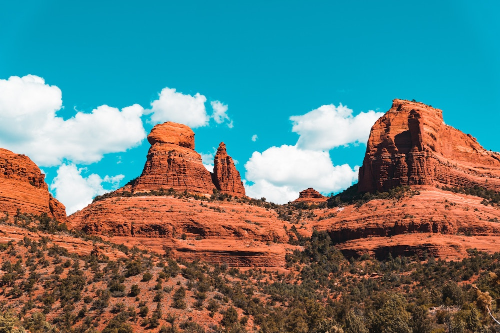
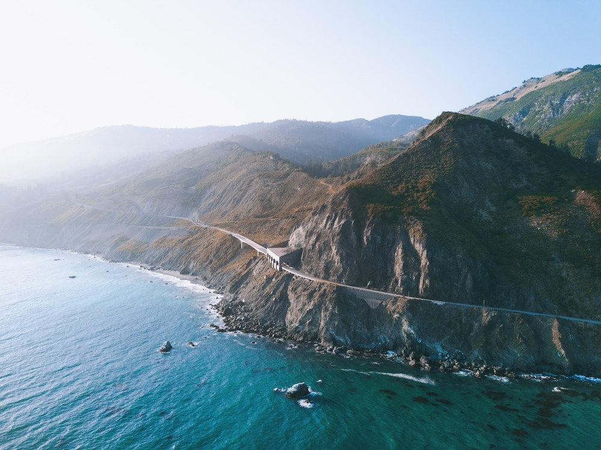
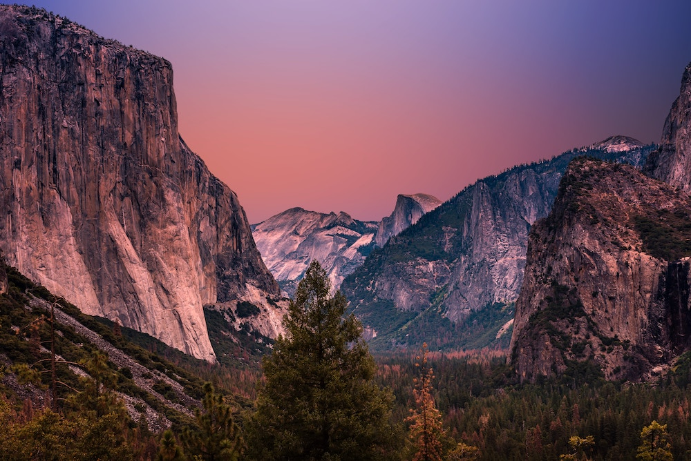
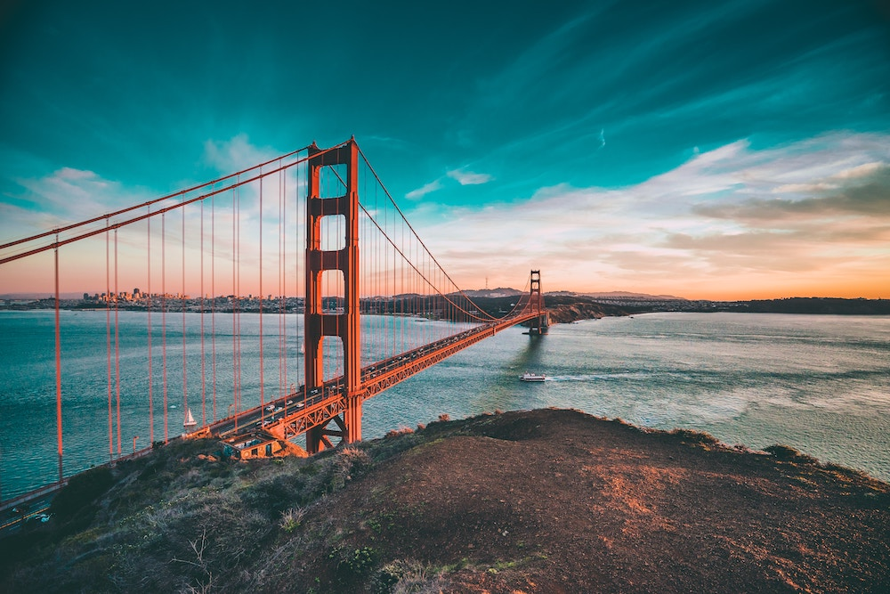
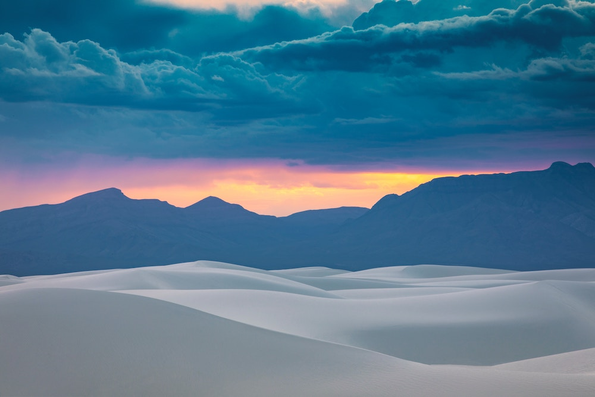

5 Cose da vedere assolutamente nell'ovest americano
I viaggi nell'Ovest americano sono un'esperienza indimenticabile che trasporta i visitatori in un mondo di avventure, bellezze naturali e ricca storia. Attraverso vasti paesaggi desertici, maestose catene montuose e città vibranti, questa regione offre una diversità straordinaria.
Con cultura nativa americana, parchi nazionali mozzafiato e una miscela affascinante di tradizioni e innovazioni, i viaggi nell'Ovest americano sono un viaggio da sogno per ogni appassionato di esplorazione.
Sedona è una splendida città situata nello stato dell'Arizona, negli Stati Uniti. Conosciuta per i suoi paesaggi mozzafiato e le sue formazioni rocciose uniche, Sedona è una meta molto popolare per gli amanti della natura e gli appassionati di escursionismo. Le montagne rosse che circondano la città offrono panorami spettacolari, soprattutto durante l'alba e il tramonto.
Sedona è anche famosa per le sue energie spirituali e il centro di vortex, luoghi in cui si crede ci sia un'intensa concentrazione di energia. I visitatori possono godersi una varietà di attività, tra cui escursioni, mountain bike, shopping artistico e trattamenti di benessere. Sedona è davvero un luogo magico che lascia un'impressione duratura.

Dettaglio delle montagne che circondano Sedona
Highway 101
La Highway 101, conosciuta anche come Pacific Coast Highway o semplicemente PCH, è una delle strade panoramiche più spettacolari del mondo. Percorrendo la costa occidentale degli Stati Uniti, dalla California all'Oregon e oltre, la Highway 101 offre viste mozzafiato sull'oceano Pacifico e panorami suggestivi lungo tutto il tragitto.
La strada si snoda tra scogliere imponenti, spiagge dorate, foreste lussureggianti e città costiere affascinanti. Lungo il percorso, è possibile ammirare la bellezza dell'oceano, con le onde che si infrangono sugli scogli e i tramonti infuocati che tingono il cielo di sfumature incantevoli.
La Highway 101 è un'esperienza di viaggio indimenticabile, offrendo una connessione profonda con la natura e una serie di incredibili punti panoramici lungo la strada.

Un tratto della Pacific Coast Highway tra San Francisco e il confine con l'Oregon.
Yosemite National Park
Yosemite è un paradiso naturale incastonato tra le montagne della Sierra Nevada, in California. Questo iconico parco nazionale è rinomato per le sue maestose cascate, valli scoscese e imponenti formazioni rocciose come El Capitan e Half Dome. La valle di Yosemite, il cuore del parco, offre una vista spettacolare con le sue pareti granitiche che si innalzano verso il cielo.
I visitatori possono immergersi nella bellezza della natura attraverso escursioni panoramiche, passeggiate tra boschi secolari di sequoie e avventurarsi in arrampicate emozionanti. Il parco offre anche opportunità per praticare attività all'aria aperta, come rafting, ciclismo e fotografia, rendendo Yosemite un luogo magico che ispira e incanta i visitatori di ogni età.

Vista di Yosemite da Glacier Point.
San Francisco e la Bay Area
San Francisco è una città affascinante e vibrante situata sulla costa occidentale degli Stati Uniti, in California. Conosciuta per il suo iconico Golden Gate Bridge, le sue ripide colline e la sua atmosfera cosmopolita, San Francisco offre una combinazione unica di bellezza naturale e cultura vivace.
I visitatori possono esplorare i quartieri caratteristici come Chinatown, Fisherman's Wharf e Haight-Ashbury, dove si respira una miscela di influenze culturali e una vivace scena artistica. La città è anche famosa per la sua nebbia caratteristica, i suoi tram storici e il famoso carcere di Alcatraz. San Francisco è davvero una destinazione straordinaria che incanta con la sua diversità e il suo fascino unico.

L'iconico Golden Gate che collega San Francisco al resto della Bay Area
White Sands
White Sands è un luogo straordinario che sembra provenire da un altro mondo. Situato nel deserto del Nuovo Messico, questo parco nazionale è famoso per le sue dune di sabbia bianca e brillante che si estendono per chilometri e chilometri. La vista di queste dune bianche come la neve è sbalorditiva e crea un panorama surreale. I visitatori possono passeggiare, fare escursioni e persino fare slittino sulle dune di sabbia.
Il paesaggio cambia costantemente a causa dei venti e delle correnti, offrendo sempre nuove esperienze. White Sands è un luogo di bellezza incantevole e avventura senza pari.

Un tramonto sulle dune bianche del White Sands